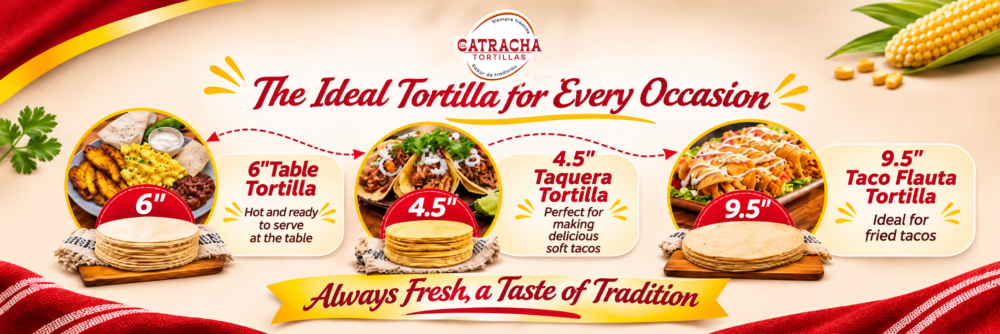
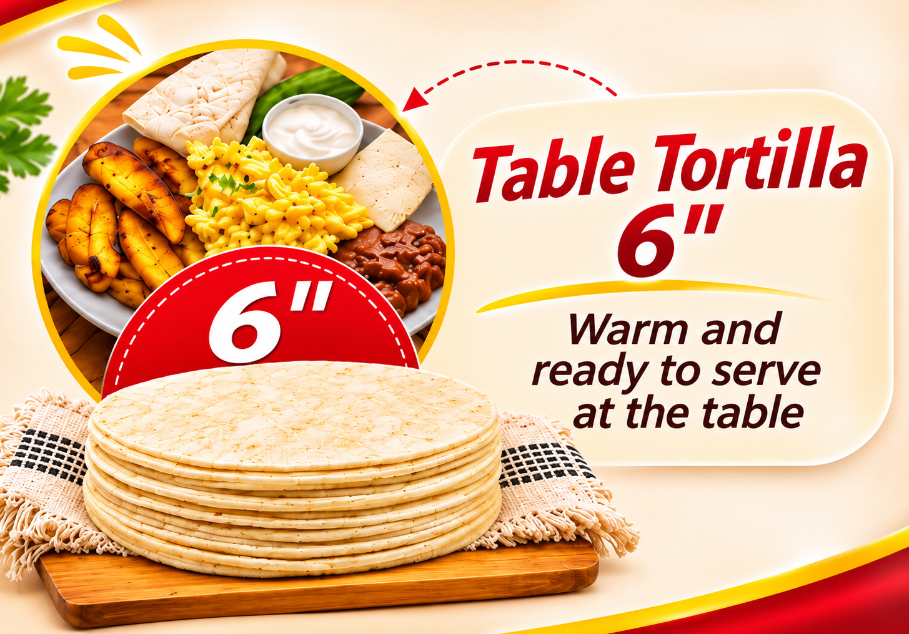
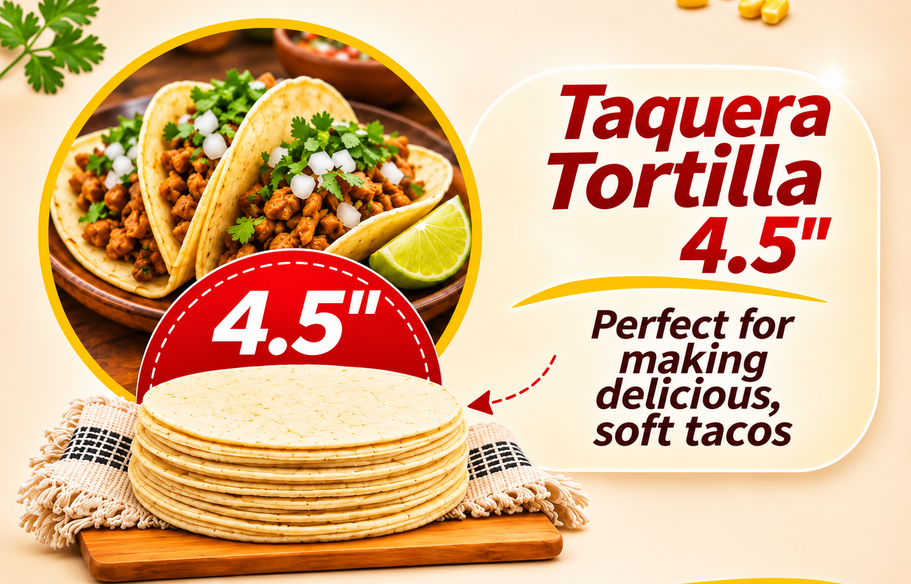
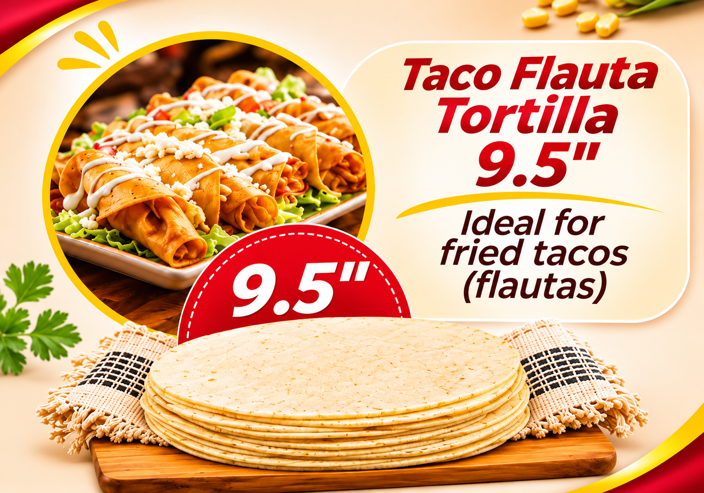
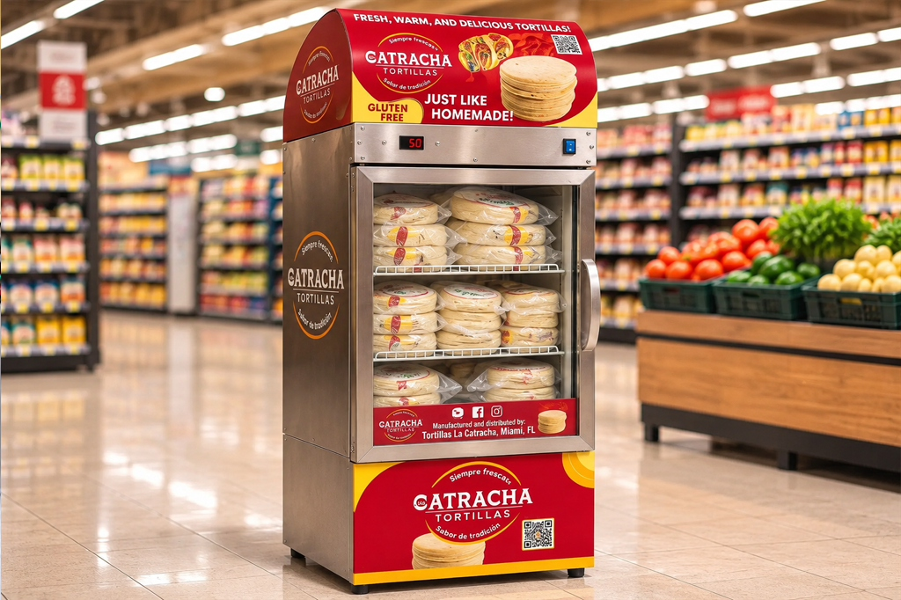

2501 NW 27TH AVE. MIAMI, FL. 33142
lacatrachatortillas@gmail.com

Our factory exclusively produces corn tortillas using original recipes. Hot, soft, and ready to serve thanks to our thermal warmer system.

Hot, ready to serve at the table
The classic and indispensable tortilla for the everyday table. Crafted daily with 100% selected corn and kept in thermal warmers to guarantee maximum freshness and ideal serving temperature.

Made for delicious soft tacos
Designed with the ideal size and thickness for taquerias, food trucks, and taco lovers. Its elastic dough holds up to sauces, lime, and juicy meats without splitting or tearing.

Ideal for fried tacos
Extra-large, pliable format for easily rolling golden tacos and crispy flautas. Fries to a flawless golden color and an irresistible crunch without absorbing excess oil.
We guarantee that every package of tortillas preserves its temperature, aroma, and unbeatable softness until the moment of purchase at the supermarket.

We dedicate ourselves exclusively to the craft of freshly made corn tortillas, ensuring authentic recipes, peak freshness, and thermal warmer delivery for supermarkets and businesses across Florida.
2501 NW 27TH AVE. MIAMI, FL. 33142
.png)